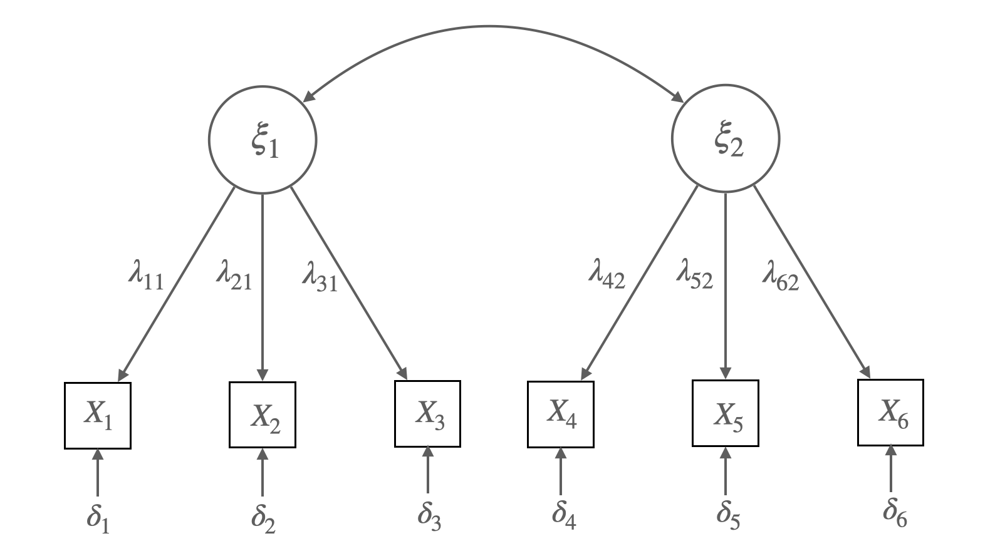

Load libraries
library(tidyverse)
library(lavaan)
library(semTools)Multiple Regression and Beyond (3e) by Timothy Z. Keith
library(tidyverse)
library(lavaan)
library(semTools)Measures of political democracy and industrialization for 75 developing countries in 1960 and 1965
Figure 4.2 Union Sentiment Model for Southern Textile Workers
Source: p. 83, Bollen, K. A. (1989). Structural equations with latent variables
Matrix representation of the model:
\[ \mathbf{Y} = \mathbf{B}\mathbf{Y} + \mathbf{\Gamma}\mathbf{X} + \boldsymbol{\zeta} \]
\[ \begin{bmatrix} y_1 \\ y_2 \\ y_3 \end{bmatrix} = \begin{bmatrix} 0 & 0 & 0 \\ \beta_{21} & 0 & 0 \\ \beta_{31} & \beta_{32} & 0 \end{bmatrix} \begin{bmatrix} y_1 \\ y_2 \\ y_3 \end{bmatrix} + \begin{bmatrix} 0 & \gamma_{12} \\ 0 & \gamma_{22} \\ \gamma_{31} & 0 \end{bmatrix} \begin{bmatrix} x_1 \\ x_2 \end{bmatrix} + \begin{bmatrix} \zeta_1 \\ \zeta_2 \\ \zeta_3 \end{bmatrix} \]
The covariance matrix of exogenous variables:
\[ \mathbf{\Phi} = \begin{bmatrix} \phi_{11} & \phi_{12} \\ \phi_{21} & \phi_{22} \end{bmatrix} \]
The covariance matrix of error terms:
\[ \mathbf{\Psi} = \begin{bmatrix} \psi_{11} & 0 & 0 \\ 0 & \psi_{22} & 0 \\ 0 & 0 & \psi_{33} \end{bmatrix} \]
# A dataset from Bollen (1989) containing measures of political democracy and industrialization for 75 developing countries in 1960 and 1965.
bollen1989a <- MIIVsem::bollen1989a |> as_tibble()
# fig 4.2
model <- '
y3 ~ x1 + y1 + y2
y2 ~ x2 + y1
y1 ~ x2
'
fit <- sem(model, data = bollen1989a, fixed.x = FALSE)# coefficients: betas & gamma
inspect(fit, what = "est")$beta |> round(2) |> print() y3 y2 y1 x1 x2
y3 0 0.06 0.76 0.36 0.00
y2 0 0.00 0.88 0.00 0.16
y1 0 0.00 0.00 0.00 0.56
x1 0 0.00 0.00 0.00 0.00
x2 0 0.00 0.00 0.00 0.00# covariances: psi & phi
inspect(fit, what = "est")$psi |> round(2) |> print() y3 y2 y1 x1 x2
y3 5.64
y2 0.00 9.71
y1 0.00 0.00 6.09
x1 0.00 0.00 0.00 0.53
x2 0.00 0.00 0.00 0.98 2.25
Source: p. 86, Bollen, K. A. (1989). Structural equations with latent variables
\(y_1 = \gamma_{11}x_1 + \zeta_1\)
\(y_2 = \beta_{21}y_1 + \zeta_2\)
Matrix representation:
\(\begin{bmatrix} y_1 \\ y_2 \end{bmatrix} = \begin{bmatrix} 0 & 0 \\ \beta_{21} & 0 \end{bmatrix} \begin{bmatrix} y_1 \\ y_2 \end{bmatrix} + \begin{bmatrix} \gamma_{11} \\ 0 \\ \end{bmatrix} \begin{bmatrix} x_1 \end{bmatrix} + \begin{bmatrix} \zeta_1 \\ \zeta_2 \end{bmatrix}\)
\(\mathbf{\Phi} = \begin{bmatrix} \phi_{11} \end{bmatrix}\)
\(\mathbf{\Psi} = \begin{bmatrix} \psi_{11} & \psi_{12}\\ \psi_{21} & \psi_{22}\\ \end{bmatrix}\)
가정들:
\(Cov(aX+bY,~ cU+dV) = ac~Cov(X, U) + ad~Cov(X, V) + bc~Cov(Y, U) + bd~Cov(Y, V)\)
\(\begin{align} cov(y_1, y_2) & = cov(\gamma_{11}x_1 + \zeta_1, \beta_{21}y_1 + \zeta_2) \\ & = \gamma_{11} \beta_{21} cov(x_1, y_1) + \gamma_{11} cov(x_1, \zeta_2) + \beta_{21} cov(y_1, \zeta_1) + cov(\zeta_1, \zeta_2) \\ & = \gamma_{11} \beta_{21} * \gamma_{11} \phi_{11} + \beta_{21} \psi_{11} \\ & = \beta_{21}( \gamma_{11}^2 \phi_{11} + \psi_{11}) \end{align}\)
\[\begin{equation} \begin{bmatrix} \text{VAR}(y_1) \\ \text{COV}(y_2, y_1) & \text{VAR}(y_2) \\ \text{COV}(x_1, y_1) & \text{COV}(x_1, y_2) & \text{VAR}(x_1) \end{bmatrix} = \begin{bmatrix} \gamma_{11}^2\phi_{11} + \psi_{11} \\ \beta_{21}(\gamma_{11}^2\phi_{11} + \psi_{11}) & \beta_{21}^2(\gamma_{11}^2\phi_{11} + \psi_{11}) + \psi_{22} \\ \gamma_{11}\phi_{11} & \beta_{21}\gamma_{11}\phi_{11} & \phi_{11} \end{bmatrix} \end{equation}\]
기본적인 구조 모형의 가설(hypothesis):
\(\Sigma = \Sigma(\theta)\)
즉, 모집단의 공분산 = 모수(parameter)로 표현되는(implied) 공분산
이제 이 둘의 차 \(\mathbf{S} - \hat{\Sigma}(\theta)\)를 최소화하는 파라미터들(통칭 \(\theta\))를 찾고자 함.
예를 들어,
# covariance matrix
lower <- '
225.2
32.1 100.3
111.4 26.5 105.2'
cov <- getCov(lower, names = c("x1", "y1", "y2"))model <- '
# regressopm
y2 ~ 0*x1 + y1
y1 ~ x1
# variacne
# y2 ~~ y1 # assumed to be uncorrelated
'
fit <- sem(model, sample.cov = cov, sample.nobs = 200, fixed.x = F)parameterEstimates(fit) |> print() lhs op rhs est se z pvalue ci.lower ci.upper
1 y2 ~ x1 0.000 0.000 NA NA 0.000 0.000
2 y2 ~ y1 0.264 0.070 3.776 0.000 0.127 0.401
3 y1 ~ x1 0.143 0.046 3.092 0.002 0.052 0.233
4 y2 ~~ y2 97.708 9.771 10.000 0.000 78.557 116.858
5 y1 ~~ y1 95.246 9.525 10.000 0.000 76.578 113.914
6 x1 ~~ x1 224.074 22.407 10.000 0.000 180.156 267.992 sigma_hat <- lavInspect(fit, "cov.all")[3:1, 3:1] |> round(1)
sigma_hat |> print() x1 y1 y2
x1 224.1 31.9 8.4
y1 31.9 99.8 26.4
y2 8.4 26.4 104.7# 공분산 행렬 차이: residual covariance matrix
(cov - sigma_hat) |> print() x1 y1 y2
x1 1.1 0.2 103.0
y1 0.2 0.5 0.1
y2 103.0 0.1 0.5즉, \(\mathbf{S} - \hat{\Sigma}(\theta) = \begin{bmatrix} 1.1 \\ 0.2 & 0.5 \\ 103.0 & 0.1 & 0.5 \end{bmatrix}\)
이는 어떤 다른 파라미터 추정치에 대해서도 이 공분산 차이보다 더 작을 수 없다는 의미임.
한편, 어떤 의미에서 차이가 작다는지를 정의해야 함.
\(\mathbf{S} - \hat{\Sigma}(\theta)\)가 작다는 것을 어떻게 정의할 것인가?
혹은, 두 행렬 \(\mathbf{S}\), \(\hat{\Sigma}(\theta)\) 사이의 거리를 어떻게 정의할 것인가?
Fiting function(목적 함수)를 통해 그 함수가 최소가 되는 파라미터를 찾는 방식
Maximum Likelihood Estimation
관측 변수들이 multivariate normal distribution을 따른다고 가정하면,
Log-likelihood \(\displaystyle L(\theta) = \frac{-N(p + q)}{2}log(2\pi) - \frac{N}{2}\left(log|\Sigma(\theta)| + tr(S\Sigma^{-1}(\theta))\right)\)
\(F_{ML} = log|\Sigma(\theta)| + tr(S\Sigma^{-1}(\theta)) - log|S| - (p + q)\)
즉, likelihood를 최대화하는 것은 \(F_{ML}\)를 최소화하는 것과 동일함.
Fitting function으로써 \(F_{ML}\)의 장점은 asymptotic properties를 가지고 있음.
위의 예에서,
즉, 식은 6개이며 미지수는 5개이므로 추정가능함!
이 때, 자유도(degree of freedom) df = 6 - 5 = 1
summary(fit, estimate = F) |> print()lavaan 0.6-18 ended normally after 10 iterations
Estimator ML
Optimization method NLMINB
Number of model parameters 5
Number of observations 200
Model Test User Model:
Test statistic 139.381
Degrees of freedom 1
P-value (Chi-square) 0.000# info for parameters
lavaan::parTable(fit) |> print() id lhs op rhs user block group free ustart exo label plabel start est
1 1 y2 ~ x1 1 1 1 0 0 0 .p1. 0.000 0.000
2 2 y2 ~ y1 1 1 1 1 NA 0 .p2. 0.111 0.264
3 3 y1 ~ x1 1 1 1 2 NA 0 .p3. 0.143 0.143
4 4 y2 ~~ y2 0 1 1 3 NA 0 .p4. 48.671 97.708
5 5 y1 ~~ y1 0 1 1 4 NA 0 .p5. 95.246 95.246
6 6 x1 ~~ x1 0 1 1 5 NA 0 .p6. 224.074 224.074
se
1 0.000
2 0.070
3 0.046
4 9.771
5 9.525
6 22.407모형에 대한 평가는 1) 변수들 간의 관계성 2) 그 관계의 크기 모두에 대해 이루어져야 함.
이를 위해 전체적인 평가(overal fit measures)와 부분적인 평가(local/component fit measures)로 나누어 살펴봄.
두 행렬 \(\mathbf{S}\)와 \(\hat{\Sigma}(\theta)\)간의 거리를 측정하여 모형이 전체적으로 얼마나 적합한지를 평가함.
부분적인(local) 적합도를 살펴보는 것으로는 드러나지 못하는 “전체적 부적절함”을 판별할 수는 지표를 얻을 수 있음.
Ideally, all residuals should be near zero for a “good” model. But the sample residuals are affected by several factors: (1) the departure of \(\Sigma\) from \(\Sigma(\theta)\), (2) the scales of the observed variables, and (3) sampling fluctuations
표본의 크기가 커질수록, 공분산/상관 잔차의 값이 줄어드는 경향이 있음.
예제: Reisenzein(1986)의 실험
동정심
x1: 그 사람에 대해 얼마나 동정심(sympathy)을 느끼십니까?
x2: 나는 이 사람에게 연민(pity)을 느낍니다.
x3: 이 사람에 대해 얼마나 걱정(concern)이 되십니까?
분노
x4: 그 사람에게 얼마나 화가 나시나요?
x5: 그 사람에게 얼마나 짜증을 느끼시겠습니까?
x6: 그 사람 때문에 기분이 나빠질 것입니다.

Figure 7.4 Confirmatory Factor Analysis Model for Sympathy (\(\xi_1\)) and Anger (\(\xi_2\)). Each Measured with Three Indicators (\(X_1\) to \(X_6\))
Source: p. 260, Bollen, K. A. (1989). Structural equations with latent variables
# fig 7.4
lower <- "
6.982
4.686 6.047
4.335 3.307 5.037
-2.294 -1.453 -1.979 5.569
-2.209 -1.262 -1.738 3.931 5.328
-1.671 -1.401 -1.564 3.915 3.601 4.977
"
cov <- getCov(lower, names = c("x1", "x2", "x3", "x4", "x5", "x6"))
model_sa <- '
sympathy =~ x1 + x2 + x3
anger =~ x4 + x5 + x6
'
fit_sa <- sem(model_sa, sample.cov = cov, sample.nobs = 138)# coveriance residuals
residuals(fit_sa) |> print()$type
[1] "raw"
$cov
x1 x2 x3 x4 x5 x6
x1 0.000
x2 0.028 0.000
x3 -0.016 -0.027 0.000
x4 -0.073 0.247 -0.387 0.000
x5 -0.170 0.297 -0.277 -0.030 0.000
x6 0.334 0.136 -0.126 0.013 0.020 0.000
# correlation residuals
residuals(fit_sa, type = "cor") |> print()$type
[1] "cor.bollen"
$cov
x1 x2 x3 x4 x5 x6
x1 0.000
x2 0.004 0.000
x3 -0.003 -0.005 0.000
x4 -0.012 0.043 -0.074 0.000
x5 -0.028 0.053 -0.054 -0.006 0.000
x6 0.057 0.025 -0.025 0.002 0.004 0.000
# standardized residuals
residuals(fit_sa, type = "standardized") |> print()$type
[1] "standardized"
$cov
x1 x2 x3 x4 x5 x6
x1 0.000
x2 1.353 0.000
x3 -1.035 -0.379 0.000
x4 -0.392 0.871 -1.503 0.000
x5 -0.723 0.967 -1.006 -1.203 0.000
x6 1.585 0.483 -0.493 0.568 0.566 0.000
# normalized residuals
residuals(fit_sa, type = "normalized") |> print()$type
[1] "normalized"
$cov
x1 x2 x3 x4 x5 x6
x1 0.000
x2 0.042 0.000
x3 -0.026 -0.049 0.000
x4 -0.130 0.488 -0.809 0.000
x5 -0.311 0.604 -0.601 -0.053 0.000
x6 0.644 0.284 -0.285 0.023 0.038 0.000
공분산의 잔차들이 모집단에서 0과 다른지에 대한 통계적 검증하고자 함.
Chi-Square( \(\chi^2\)) Test
위의 CFA의 예에서,
\(\begin{align} \chi^2_{ML} = (N)*F_{ML}(S, \hat{\Sigma}(\theta)) & = N*\left(log|\Sigma(\theta)| + tr(\Sigma^{-1}(\theta)S) - log|S| - (p + q)\right) \\ & = 138 * 0.0698 = 9.632 \\ \end{align}\)
이 값은 다음과 같이 해석할 수 있음.
\(\begin{align} -2log\left(\frac{L_0}{L_1}\right) & = -2(logL_0 - logL_1) \\ & = -2*[-1654.635 - (-1649.817)] = 9.635 \\ \end{align}\)
Degree of freedom = \(\displaystyle\frac{6*7}{2} - 13 = 21 - 13 = 8\)


\(\chi^2\) 분포로부터 \(p = 0.292\), Bootstrap 샘플 중 29.8%
# Fitting function의 최소값
fitmeasures(fit_sa, "fmin") |> print(nd = 4) fmin
0.0349 # 설정한 모형의 log-likelihood & unrestricted 모형의 log-likelihood, chi-square 값
fitMeasures(fit_sa, c("chisq", "pvalue", "logl", "unrestricted.logl")) |> print() chisq pvalue logl unrestricted.logl
9.635 0.292 -1654.635 -1649.817 summary(fit_sa, fit.measures = T, estimates = F) |> print()lavaan 0.6-19 ended normally after 36 iterations
Estimator ML
Optimization method NLMINB
Number of model parameters 13
Number of observations 138
Model Test User Model:
Test statistic 9.635
Degrees of freedom 8
P-value (Chi-square) 0.292
Model Test Baseline Model:
Test statistic 473.058
Degrees of freedom 15
P-value 0.000
User Model versus Baseline Model:
Comparative Fit Index (CFI) 0.996
Tucker-Lewis Index (TLI) 0.993
Loglikelihood and Information Criteria:
Loglikelihood user model (H0) -1654.635
Loglikelihood unrestricted model (H1) -1649.817
Akaike (AIC) 3335.269
Bayesian (BIC) 3373.324
Sample-size adjusted Bayesian (SABIC) 3332.196
Root Mean Square Error of Approximation:
RMSEA 0.038
90 Percent confidence interval - lower 0.000
90 Percent confidence interval - upper 0.111
P-value H_0: RMSEA <= 0.050 0.526
P-value H_0: RMSEA >= 0.080 0.217
Standardized Root Mean Square Residual:
SRMR 0.030